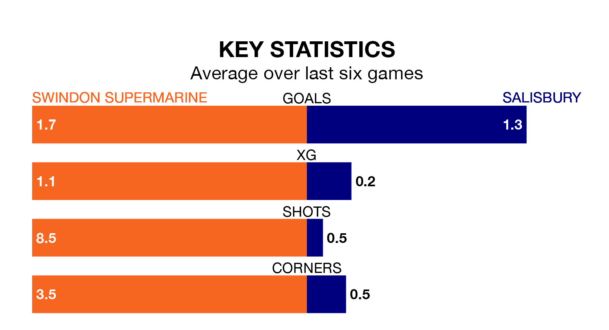

Salisbury travel to the Webbs Wood Stadium for Saturday's match against Swindon Supermarine looking to bounce back from defeat last time out in the Southern League Premier South.
Salisbury, who sit third in the league after 35 games, fell to a 1-0 away defeat to Dorchester Town on March 23.
They face a Swindon Supermarine side who secured a draw in their last match, a 2-2 tie with Hayes and Yeading United, and who sit 16th in the table.
In the last 10 years, Swindon Supermarine and Salisbury have played each other on eight occasions. They won three each, and they drew twice.
On average, Swindon Supermarine scored 1.9 goals and Salisbury 1.9 in those matches.
Their last meeting was on August 15, when Salisbury won 3-2 at home.
With 61 goals in 36 games so far this season, Swindon Supermarine are scoring at the league's average rate with 1.7 goals per game. And they are conceding more than average, letting in 82 goals at a rate of 2.3 per game.
Salisbury are also average scorers, with 1.7 goals per game. They have conceded 1.1 goals per game.
The hosts are in mixed form in the Southern League Premier South, with two wins and two draws from their last six games.
With two wins and three draws over that period, the away team's form is slightly better – they have taken nine points from 18, compared to Swindon Supermarine's eight.
Updated: 12:16 (UTC), 25/03/24